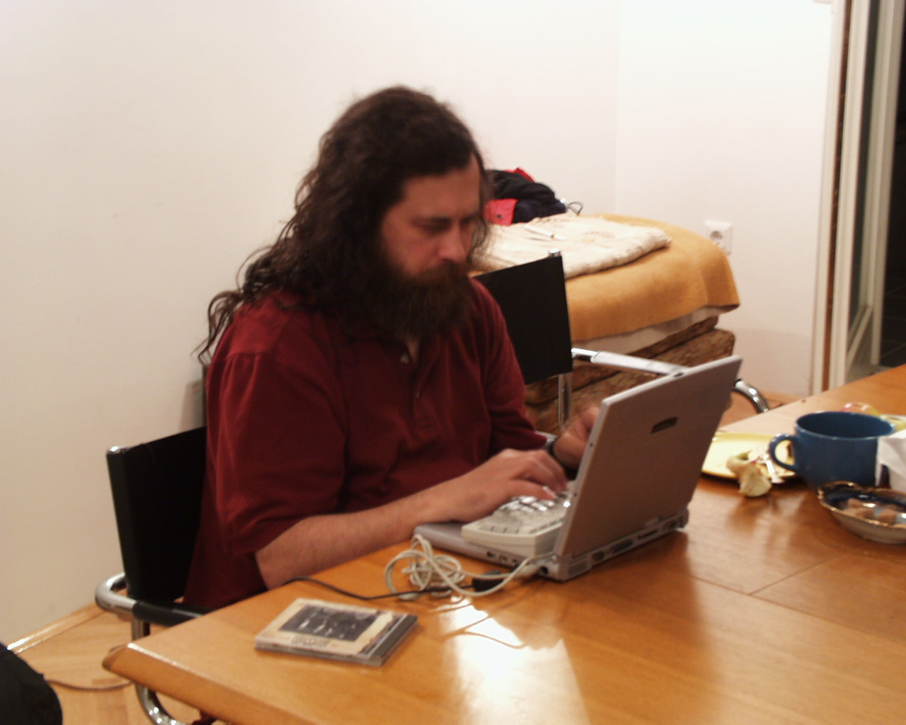
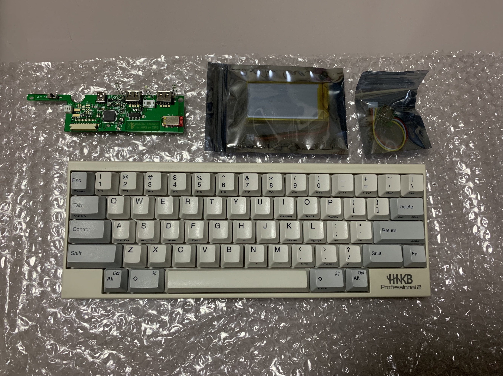
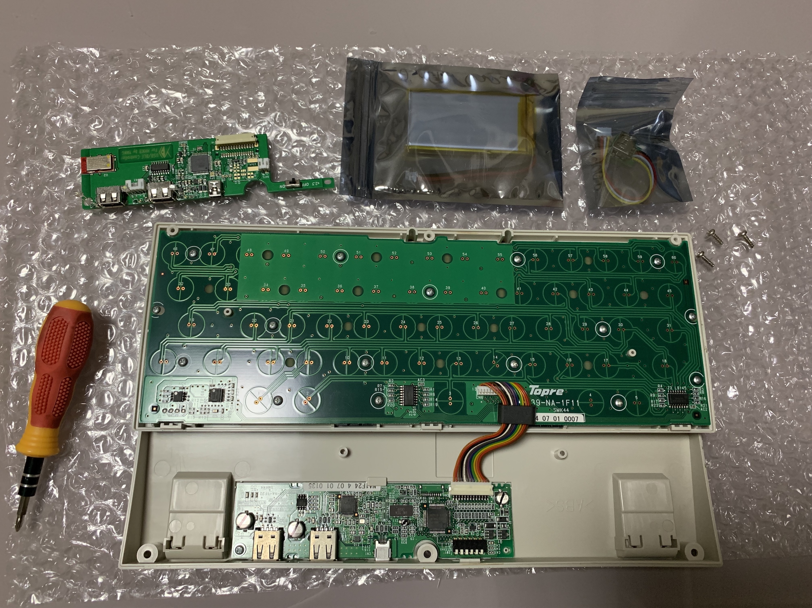
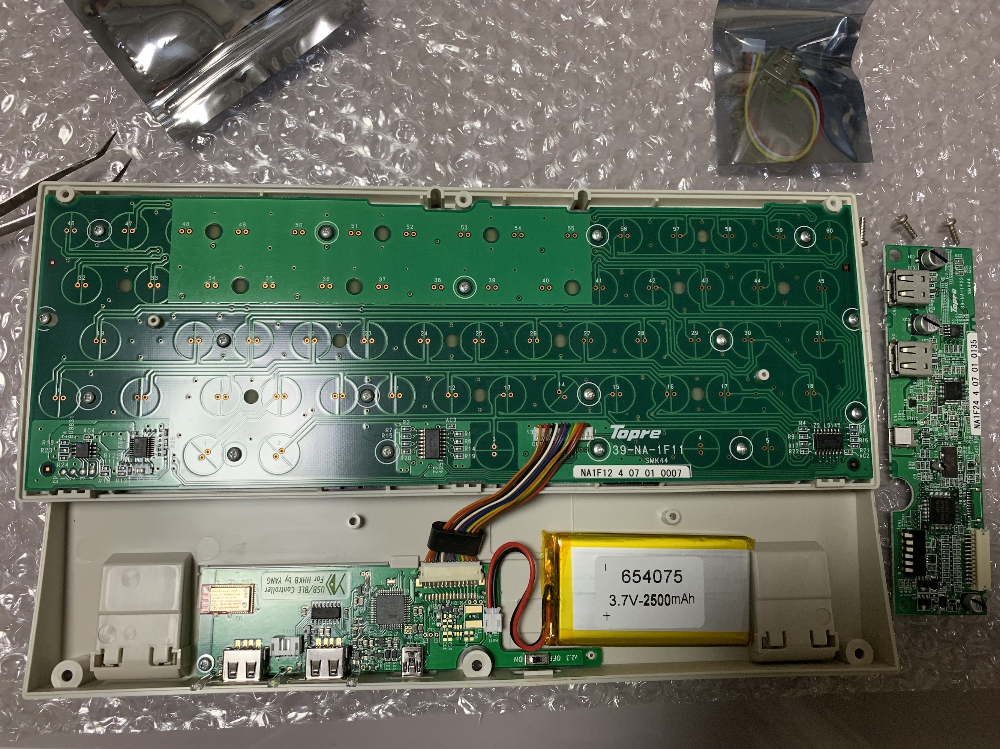
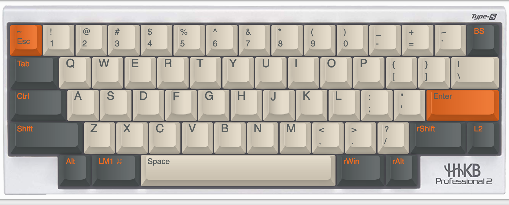
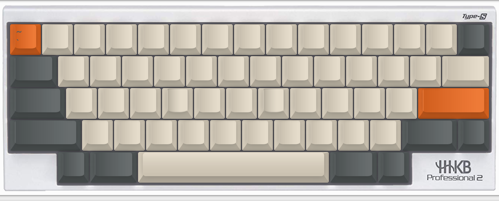
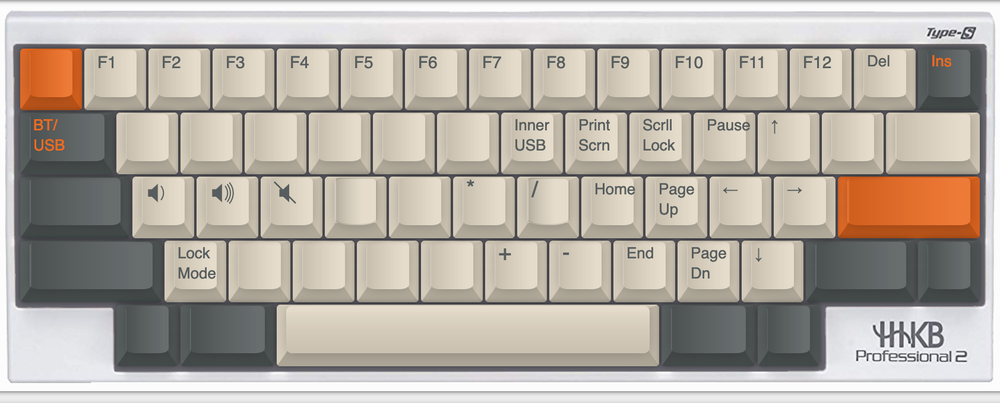

如虎添翼！HHKB 增加蓝牙模块
文章目录
HHKB(Happy Hacking Keyboard)相信程序员都会听说过，无须多说，看看 GNU 教主用 HHKB 的风采。

如果恰好你手中的 HHKB 也是教主这个型号，那么是没有蓝牙功能的。现有的选项是：
- A 官方有售蓝牙版；
- B 官方有售蓝牙适配器；
- C Hacking，改造手中的键盘!!!
不用想，一定选 C。
Hacking
第一个做出 HHKB 蓝牙控制模块的人应该是 hasu了。关注了很久一直没有下单，主要原因是购买困难，首先要给作者发个邮件，然后等作者回邮 paypal 付款链接，付款后等作者从日本发货……
一直关注淘宝，盼望着有国内的大神把火种带给中国人民。最近同事购入了蓝牙版的 HHKB，我又想起了这回事，上淘宝一搜，喜出望外，竟然真有大神做出来了，还是改进版！作者是 YANG，介绍可以看这里 http://help.ydkb.io/doku.php?id=kb-mods:hhkb-ble ，购买链接也在里面。从介绍页面得知，优化的主要是省电这一块。
焦急地等了一个多星期，终于到货了。拆开后和我的 HHKB 合影，左上是主控板，中上是电池，右上是额外的 usb 连接线，可以在键盘内内置一个U盘。

安装过程非常简单，只需要螺丝刀，下图是 HHKB 拆开的样子。

换上主控板，装上电池，完成。上电连接电脑，敲几下键盘，没问题就可以把外壳装回去了。装好之后完全看不出痕迹。

Mapping
看到这里，你以为仅仅是给 HHKB 加上蓝牙这么简单吗？No no no. 这个主控板除了给 HHKB 加上蓝牙之外，还加入了强大的编程功能。原来在 MacOS 上我用 Karabiner 改键，在 Windows 上用 SharpKeys，现在这个工作可以转移到键盘里了。
ydkb.io 的映射逻辑非常灵活。下图从 ydkb.io 引用而来，支持8层，每一层都可以设置一套按键。这些层不是单选的关系，而是层叠的关系，举个例子，打开了第1层，但是对应的按键没有配置，那么将会穿透到第0层对应按键上。
利用这个特性，我们可以很容易实现 fn 键。只需要给 fn 组合建的功能都设置到一层里，然后把 fn 键作为该层的开关即可。这是最简单的用法，我们还可以实现更复杂的功能。
|
|
我的配列
HHKB 原生的配列有几处地方我一直不习惯，必须调整：
- 退格与
|\键的位置交换了； ~`键不在1的左边。
1好解决，轻松互换。2不好办，因为1的左边已经被esc占据，esc、~、`三个都是非常常用的键，怎样让它们在一个键上和平共处？
首先，~是需要按shift输入，只要让shift + esc = ~即可，这个功能在 ydkb.io 里直接有提供。其次是 ` 键，这个按键我主要用在三个地方，频次从高到低分别是：
cmd + `在 MacOS 里是同应用不同窗口间的切换；- markdown 的 fence code block；
- shell、sql 里用到。
我打算只解决1，因为2、3不常用，可以继续用=右边的按键。解决办法是把 cmd 改成 cmd & 层1，然后把 ` 放到层1的esc上。
这样，cmd + esc 就变成 cmd + `了。而 cmd + 其他则不受影响，因为其他键都留空，就会穿透到层0。
最后，附上我的配列。
Layer 0:

Layer 1:

Layer 2:

Happy hacking!
文章作者 Jan Zhen
上次更新 2019-05-20